Use the Customer Sales enquiry to see the past sales to a particular customer or purchases from a particular supplier. This operates in a similar manner to the Account Enquiry, and you should refer to that section for a complete discussion.
To make a sales enquiry for a specified customer:
The Customer Sales Enquiry window will be displayed.
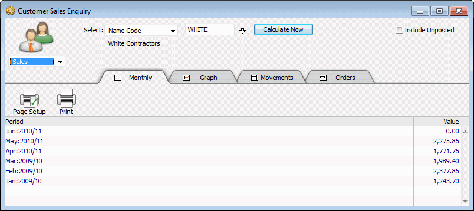
This works in a similar manner to the Accounts Select menu
The net sales value will be displayed for the customer on a period by period basis. You can drill down to see the transactions for a particular period by clicking on the row for the period.
For a discussion on the various options —see Product Enquiry.
The Payments History enquiry (not available in Cashbook) enables you to find information regarding invoices and payments (or receipts). Specifically:
Find payments made on a nominated invoice
Find invoices associated with a nominated payment (or receipt)
Find invoices for a debtor or creditor
Find payments to or receipts from a creditor or debtor
Show a complete list of transactions for the debtor or creditor To display the payments history window:
The Payments History enquiry window will be displayed.
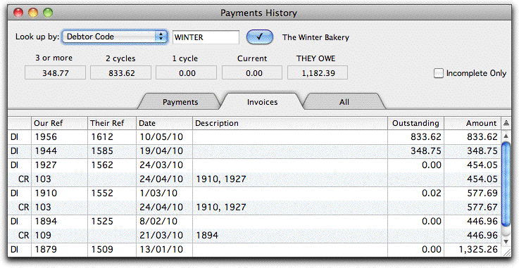
When you type a reference number or code into the Payments History, MoneyWorks will check the Names file to see if the code is that of a valid debtor or creditor. If not, MoneyWorks will attempt to find an invoice whose number matches the code, and failing this, a cheque number that matches the code. If a match is made, the appropriate transactions are listed, with the newest ones at the top of the list.
You can help MoneyWorks locate the information if you set the Look up by pop- up menu to the type of item you are looking for (debtor code, creditor code, invoice number or receipt number).
The transactions that match the code that you specified will be displayed. The transaction type is displayed in the left hand column, where “DI” is a debtor invoice, “CI” is a creditor invoice, “CP” is a cash payment and “CR” is a cash receipt.
Any associated transactions, such as payments on an invoice, or the invoice relating to a cheque, are displayed under the transaction with their transaction type indented slightly.
You cannot sort or sum the items in this list.
Set the Look up by pop-up menu to Invoice Number
The invoice and any associated receipt/payments will be listed.
Set the Look up by pop-up menu to Cheque or Receipt #
If the cheque number uniquely identifies one transaction, it will appear at the top of the list followed by the invoices that it paid.
If you have already entered a reference number or code, and this is not a valid debtor (creditor) code, the Names choices box will be displayed.
The invoices and payments for the debtor /creditor will be listed.
You can choose to display by invoice, by payment, or as a simple list.
By Invoice: Select the Invoices tab to have all invoices for the debtor shown with the corresponding payments or receipts under each one, as shown above.
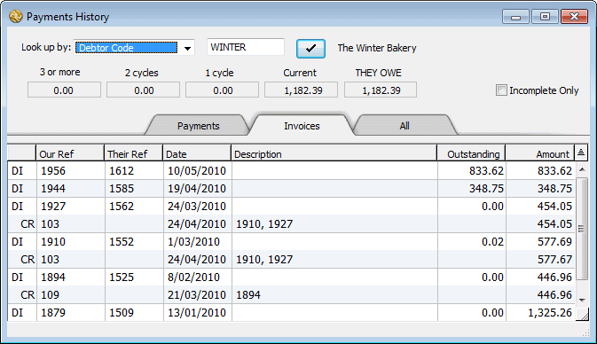
If you are looking for unpaid invoices you will need to use this view, since unpaid invoices do not show in the Payments view. Set the Incomplete Only check box, to have only unpaid (or partly paid) invoices displayed.
Note that payments made for more than one invoice will appear multiple times (once for each invoice).
By Payment: Select the Payments tab to have all payments made by the debtor shown with the associated invoices under each one.
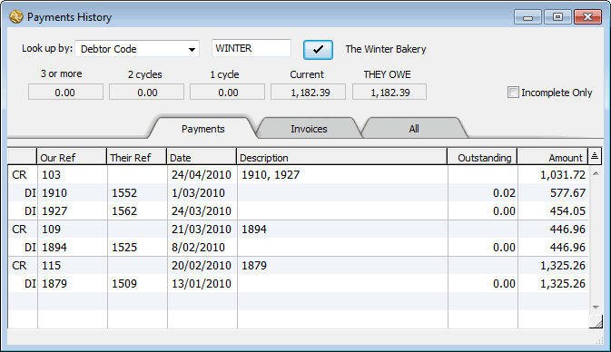
You must use by Payment to find overpayments as they do not show in the list by Invoice. In fact if you set the Incomplete Only check box, only overpayments for the debtor will be displayed.
Note that invoices that have been paid by more than one transaction will appear multiple times (once for each payment).
All transactions: Select the All tab to display all transactions related to the debtor/creditor as a simple list, which can be sorted and customised (additional columns displayed) in the normal manner.
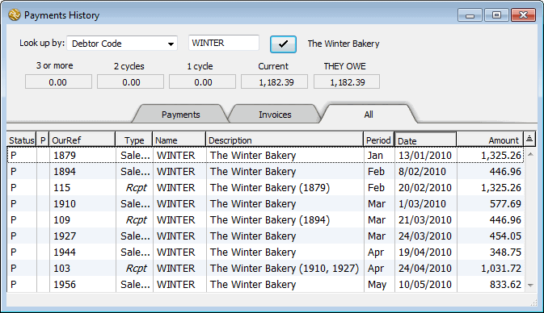
Tip: If you want a report with a running balance of the outstanding amount for a debtor, use the Balance History from Date statement form. You can print this in the same manner as any other statement — see Printing and emailing Statements, but enter the start date into the Statement Date field.
1 The budget information is taken from the A Budget — see Entering Budget Data.↩︎
2 Prior to MoneyWorks 7, a report similar to the ledger report could be printed from the Account Enquiry.↩︎
Whenever you enter a transaction into MoneyWorks it is put into a specific accounting period. Thus if you make a payment dated March, the details of that payment will be recorded in the March period, and the expenses which the payment represents will be reported on in March.
When you first set up MoneyWorks, you indicated how many periods you wanted in your financial year —see Periods. Most organisations have 12 periods, one for each calendar month in the year.
Managing your periods is important. You can only enter transactions into periods which are open. MoneyWorks will normally manage opening your periods for you automatically. However it is important to close periods as well—while a period is open you can still enter transactions against it. Because MoneyWorks stores over seven years, this means that you can back enter transactions well into the past. But, if you have already finalised your accounts for those periods, or even presented final results to the board, back entering transactions in this manner will change these results.
Note:Period Management can only be done in single user mode, and the To Do
panel in the Navigator is a good place to do it.
In MoneyWorks, a period can have one of several states:
Open: Transactions can be entered into the period;
Locked: Transactions cannot be entered into the period, but the period can be “unlocked” so it becomes open again;
Closed: Transactions cannot be entered into the period. Once a period is closed it cannot be re-opened.
Purged: A closed period can be purged. Any transactions already entered into the period are discarded. The period balances remain.
Opening a period is handled automatically for you, and will occur:
If you enter a transaction with a date past the end of the current period. You will be asked if you want to open the new period;
If you open a MoneyWorks file whose last period ends before today.
If the Document preference Auto open new period when opening file in new month is on, a new period will be silently opened when the file is first opened in the new month (regardless of the user’s privileges), provided it is opened within 30 days of the old period ending.
You can also explicitly open a period by using the Open/Close Period command in the Commands menu. You have to use this command to lock, close or purge a period. The most recently opened period is known as the current period.
Note: Opening periods in advance has little effect in MoneyWorks, but is probably better avoided.
The Period Management dialog box allows you to open, close, lock, unlock and purge periods. To display the period management dialog box:
The Period Management dialog box will open. This dialog box displays the current status of the periods at any one time.
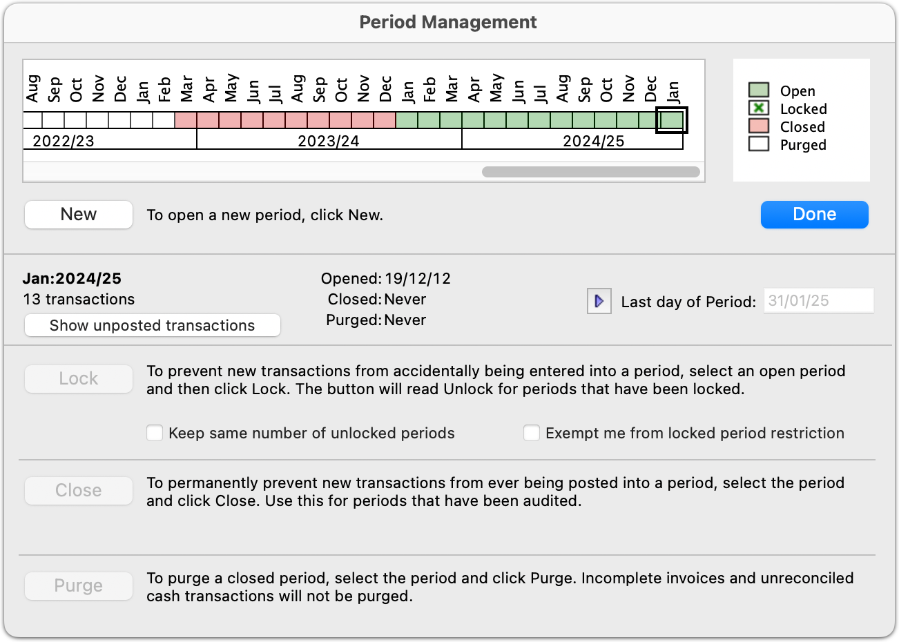
The status of individual periods is represented by a row of cute little colour- coded boxes, labelled above with the name of the period and below by the name of the financial year. The legend at the right indicates the status of each period. The right-most period is the current period.
The Open periods are displayed in green, and will be on the right hand side of the period bar. These are the periods into which you can enter and post transactions. You must have at least one period open.
Any locked periods will have a green cross through them, and will be to the immediate left of the open periods. These are periods that have been temporarily made unavailable, which is to say, transactions cannot be posted into them until they are unlocked. You will do this to prevent accidental posting of transactions into previous periods.
Closed periods appear in red. You cannot enter transactions into these, nor can they be reopened. However any transactions that you had entered are still in the system and can be viewed, printed and analysed.
Purged periods appear in white. These are closed periods that have had all the transaction information removed from them. The general ledger balances for these periods are still available.
Tip: If you need to determine the internal number of a period, hold down the shift key and these will be displayed instead of the period names.
The status information will be displayed
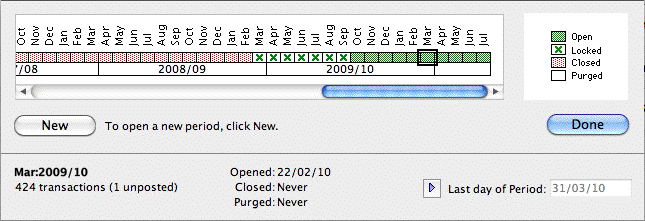
From this you can determine the period end date, the number of transactions, and when the period was opened, closed and purged.
Before you can enter transactions into a new financial period, it must be opened. MoneyWorks will offer to open a new period when you open the document for the first time after the end date of the previous period, or when you date a transaction in the new period.
You can explicitly open a period at any time as follows:
A confirmation dialog box is displayed.
Note: You should never need to do this. If in doubt, leave it alone!
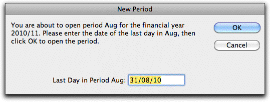
change the Last day of Period.MoneyWorks needs to know the last day of the new period.
If the new period is the first in a new financial year, a different message is displayed —see a New Financial Year.
If your year operates on calendar months, this will be correct. If you do alter this date, you will be asked for further confirmation.
The new period will appear in the Period Management dialog box. The period name will also appear in the Period pop-up menu for transaction entry, allowing you to enter transactions for the period.
The new period becomes the current period.
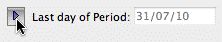
Last day in period: The period-end date is critical. Whenever you enter the date of a transaction, MoneyWorks scans these period dates to determine into which period to place the transaction. To change the date for the last day of a period:
You can lock periods so that you do not enter transactions into it by mistake. This is particularly useful when you are awaiting the final accounts from the accountant at year end.
The nominated period (which must be open and cannot be the current period), and all prior open periods, will be locked.
Automatically Locking Periods: You can specify that periods will be automatically locked. Thus, whenever you open a new period, the previous oldest unlocked period will be locked.
Set the Keep same number of unlocked periods check box
Thus if there are currently two unlocked periods when you open a new period, the earlier of these will be automatically locked and you will still have two unlocked periods.
You can unlock periods at any time, but this will require that you are the only logged in user. When periods are unlocked, any other user will also be able to post into the unoocked periods.
The nominated period, and all subsequent locked periods, will be locked.
In MoneyWorks Datacentre 9.1.6 and later, you can temporarily exempt yourself from period locking in order to post adjustments into locked periods without unlocking them for everybody.
1. Click the Exempt me from locked period restriction checkbox
The Last day in Period field enables, allowing you to enter the new period-end date.
Click the Period-End
enable button to
Locked periods will remain locked for other logged-in users, but while you remain logged in, you will be able to enter and post transactions into periods that are locked. The checkbox will reset when you log out, or you can turn it off once you have backposted any necessary adjustments.
You should close a period when you are sure that there are no more transactions for the period. Until a period is closed, the financial results for the period cannot be considered as final as they can still be changed.
Closing a period is permanent (it cannot be re-opened). For this reason a good strategy is to Lock periods once they are operationally complete, and only close periods in the previous financial year once they have been finalised by your accountant for any end of year adjustments.
Closing a period does not affect any transactions in that period (but you cannot close a period if it, or any preceding periods, have unposted transactions).
You will be asked for confirmation.
If there are unposted transactions for the period, or any prior period, the Close button will be dimmed—you cannot close a period if it (or a prior period) contains an
unposted transaction. Click the Show unposted Showing unposted transactions button to review the unposted transactions transactions in or before the highlighted period.
Note: When you close a period, any prior open periods will also be closed.
Note: Once the period is closed it cannot be reopened, and you cannot enter transactions into it. If you are unsure, consider locking the period instead.
The period(s) will be closed.
Purging removes all the transaction records for the period and any previous period. The account balances remain in the MoneyWorks document until the period is 91 periods old. A period must be closed before it can be purged.
A confirmation dialog box will be displayed. This may take a few moments as MoneyWorks will check to see if there are any transactions in the period that should not be purged. Note that the period must already be closed (otherwise the Purge button will be dimmed).
Click Cancel in the confirmation dialog if you have developed cold feet.
Purging does not affect the following transactions (they will be purged once they are completed when you purge subsequent periods or if you repurge the period):
Incomplete invoices (i.e. ones which are not fully paid).
Transactions that have not been processed for GST/VAT.
Unreconciled cash transactions against a bank which has been nominated as must be reconciled —see Bank Account Must be Reconciled.
Note: The transaction records for the period are deleted permanently from the document. For this reason, before purging a period, you may want to back up your MoneyWorks document, print a transaction list, or export the transactions into a text archive with the Export command.
Note: Purging the transactions permanently removes them from the file. The space that they took up will be reused when new transactions are entered. The file itself will not reduce in size. To reduce the file size, you should compact the file —see Compacting.
What if I never purge? If you don’t purge transactions, they will stick around forever. This may or may not be a good thing—it’s your call!
Many accounting systems require special procedures to be carried out to “roll over” into a new financial year. In MoneyWorks, all you have to do is provide a name for the new financial year—MoneyWorks does everything else for you.
You can open a new financial year even if you have not completed your accounts for the previous financial year. MoneyWorks will simply carry forward anything that is posted in the previous year.
MoneyWorks starts a new financial year if you open a new period when the current period is the last one for the current financial year. MoneyWorks will beep three times and display a different New Period dialog.
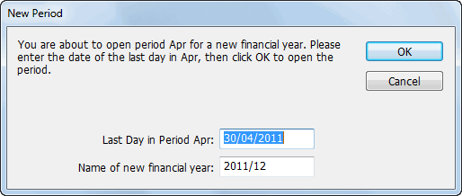
Note: The Last day in Period is the date of the end of the first period in the financial year, not the end of the financial year itself.
What Happens When I Start a New Year? When MoneyWorks opens the first period of a new financial year, it calculates the difference between the closing balances of the income accounts and the expense accounts. This difference is the profit (or loss) for the year. Instead of carrying forward the closing balances for income and expense accounts into the new year, MoneyWorks zeros the opening balances for these accounts and adds the profit to the Profit and Loss (PL) account(s).
What Do I Have To Do? If you are running a debtors or creditors ledger, it is a good idea to print out the Payables and/or Receivables lists as they stand at the end of the financial year. This will allow you to more easily reconcile your closing accounts receivable and accounts payable accounts to the actual outstanding invoices1.
To do this, simply select the appropriate tab in the View by Status view of the transactions list (such as Payable or Receivable) and choose Print from the File menu. Alternatively you could print out the Aged Debtors and Aged Creditors reports.
You should check with your accountants to find out what information they will require They may require a stock take as at the end of year, a list of outstanding debtors and creditors and so forth.
Once you have processed all your invoices and payments for the old financial year, it would be a good idea to lock all the periods in it. This will stop you inadvertently entering transactions into the old financial year. You will unlock it when your final results are available from your accountant, as you will need to enter some adjusting transactions (such as depreciation).
You shouldn’t ever have to do this, but if you do:
The period names dialog box will open.
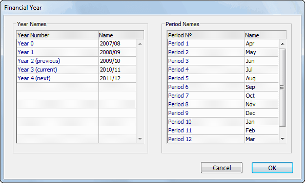
Use the return key to move down the list.
1 You can also use the Aged Receivables/Payables Report to do this at a later date if you don’t do it at the end of the period.↩︎
Preferences allow you to configure and operate your MoneyWorks in the manner that best suits your individual needs. There are two types of preferences:
MoneyWorks Preferences: These determine how the look and feel of MoneyWorks, for example what fonts and keys you prefer to use. These apply to any document you have open on your computer, and are described below.
Document Preferences: These are specific to a MoneyWorks document, for example, what the colours mean, or the next invoice number. For further information see Document Preferences
MoneyWorks Preferences
To Open the MoneyWorks Preferences:
The MoneyWorks Preferences window will be displayed.
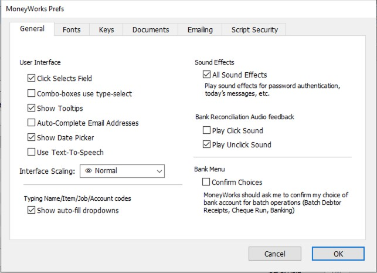
type in the first letter of the item, then keep hitting the same letter until the one you want appears.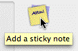
List highlighting via keyboard (Mac only): Turns on Windows-style list highlighting via the keyboard. If set, use ⌘-UpArrow or ⌘-DownArrow to move through a list without changing the highlighted record, and the spacebar to toggle the highlighting of the selected record. Note that the same behaviour on Windows is accomplished by holding down the Ctrl key.Show Tooltips: If this option is on, a small yellow “tooltip” will be displayed when you hold the cursor over an on screen control whose operation might need some further elucidation.
Show Date Picker: Turn this off if you do not wish to have the date picker automatically appear when entering a date field (the option is on by default).
Hold the cursor over a control to show the Tooltip.
The preference settings are organised into tabs in the window. Click on the appropriate tab to view the settings.
The General preferences (shown above) relate to general use of MoneyWorks.
Click Selects Field: When this option is on, MoneyWorks will highlight the entire content of a field when you activate it by clicking on it with the mouse. This is ideal for overtyping data readily. If this option is off, clicking in a field will place the insertion point at the place where you click.
Auto-Complete Email Addresses: If set, whenever you enter an email address, the address will be auto-completed from known addresses. There may be a delay the first time you start typing an email address after opening a document as MoneyWorks loads the system address book.
Use Text-To-Speech (Windows only): Turn this on to try to use Microsoft’s Text- To-Speech component and enable the speech commands. On Mac, Text-To- Speech is always available.
Interface Scaling (Windows only): Controls the magnification of MoneyWorks user interface. The larger the scaling, the bigger the on-screen windows and fonts (and hence the larger the monitor that is required).
Setting the scaling on Windows
Combo-boxes use type-select (Windows only) If this option is on you can, when typing into a combo-box (pop-up menu), just type the first characters of the item you want to select (this is more akin to Mac behaviour). Otherwise you
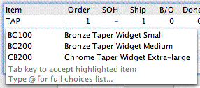
Show auto-fill dropdowns: If this option is turned on, MoneyWorks will automatically display a dropdown list of candidates that match what you entered thus far into a code field (Names, Accounts, Itemsand Jobs). The list is only displayed when fewer than twenty matches are found. The text you have typed is matched to records where either the code starts with what you have entered, or a word in the description does.
To select an item from the dropdown list, either double-click it or use the down-arrow key then press tab.
The option also applies to a dropdown list when entering a description into a transaction (or a line in a transaction). In this case the match is performed against the 100 most recently entered descriptions by that user.
Confirm Choices: If you have more than one bank account, MoneyWorks will require confirmation of your choice of bank account for the Batch Debtor Receipts and Batch Creditor Payments operations. If you don’t want to confirm your choice every time you do this, turn the Confirm Choices option off.
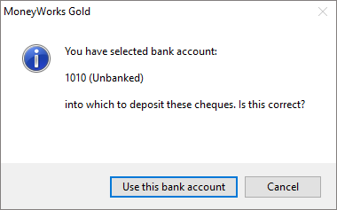
Use Sound Effects: If set MoneyWorks will play sound effects when you authenticate a password, there are reminder messages, or other users connect/disconnect to the document.
Play Click/Unclick Sound: If you want MoneyWorks to play a sound when you “unclick” an item in the Bank Reconciliation (to warn you of accidental clicks), turn on the Play Unclick Sound option (this should be on by default). You can also have a different sound played when you “click” an item by turning on the Play Click Sound option.
The fonts tab allow you to set the font and size for the MoneyWorks lists and the standard MoneyWorks reports.
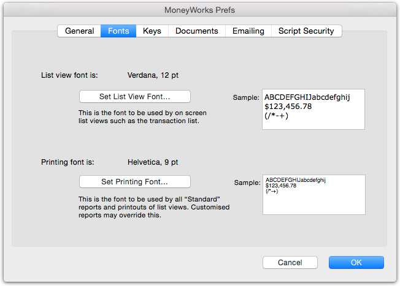
Set List View Font: Sets the fonts in the list windows choose the font and size from the font style selection window which will be displayed. If you choose a large font, you will need to resize your columns in the list view.
Set Printing Font: Sets the font for the standard reports and list printout—choose the font and size from the font style selection window which will be displayed. Note that choosing large font sizes for printing is largely self-defeating, as MoneyWorks will truncate/scale the information to
fit.
The Keys tab determines how the enter, tab and return key on your keyboard operate. You might want to do this if you are using a notebook (that only has one enter key), or because you are used to using the enter key as a tab key to take you from field to field.
The ↩︎/return key is located on the main part of the Windows keyboard, and is often shaped like a back-to-front “L”
Note: Windows users will note that there are normally (notebooks excepted) two keys labelled enter on your keyboard. In some situations these are handled differently in MoneyWorks. Where we need to differentiate these in this manual we refer to the one on the main body of the keyboard as the return (or ↩︎) key, and the one on the numeric entry pad (on the right of the keyboard) as the keypad-enter.
The default settings are shown below (the Mac settings refer to the Return key instead of the Main Enter key).
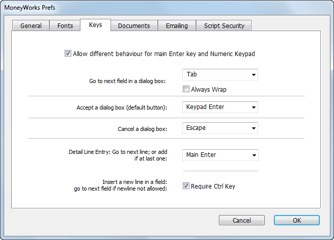
Allow different behaviours for main Enter key and Numeric Keypad Enter key: For Windows only. If set (which is the default), the behaviour for the keypad enter key and the main enter key will be different. If you have a laptop computer, you will probably only have one enter key, so you should turn off this option. In this case the F11 function key is available in place of the missing Enter key.
Go to next field: This is the key that takes you to the next field in a dialog box or entry screen. Normally the tab key is used to do this.
Always Wrap: If this option is on, when you tab out of the last detail line in a transaction MoneyWorks will tab to the first field in the transaction window (replicating the behaviour of ancient versions of MoneyWorks). If it is off, a new detail line will be added if you tab out of the last detail line.
Accept a dialog box: This is the key that activates the default button on a dialog box (the default button will always be highlighted, as shown below). The keypad enter key is normally used for this.
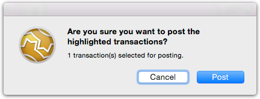
Mac alert with default Post button
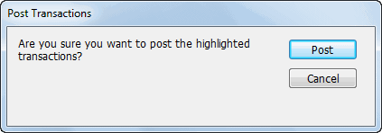
Windows alert with default Post button
Cancel a dialog: This is the key that activates the cancel button on a dialog. It is normally the escape key.
Detail line entry: The Go to Next Line key is the key to add the next detail line while entering transactions. Pressing this key (which by default is the main enter or return (↩︎) key) while in one detail line will move you to the next one down, or add another detail line if you are on the last one.
Alternatively, provided you do note have the Always Wrap option on, you can use the defined tab key to tab through the last field on the detail line and onto the next line.
Require Ctrl/Option key: Some fields (description in the detail line for example) allow multi-line entries. A multi-line entry is normally achieved by pressing the “go to next line” key.
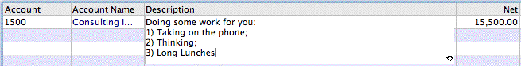
In the detail.description field, pressing this key will not create a new detail line, but rather a multi-line description. Setting the Require Ctrl/Option key preference means that a new line within the same field will only be created if the ctrl key (Windows) or the option key (Mac) is held down while
pressing the detail line entry key.
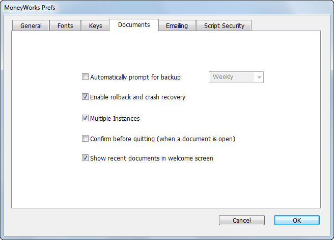
Automatically Prompt for Backup: Use this to set the frequency of how-often MoneyWorks will prompt you to back up your document upon exit. You can set it to Daily, Weekly or Monthly.
Enable Rollback and Crash Recovery: If set, MoneyWorks will maintain a session file of all changes to the file. In the event of MoneyWorks not being closed properly (for example a system crash or a power failure), the session file will contain details of all items entered and operations done since the last save. These can then be restored into the current document. Any operation that you were part way through at the time of the close will be lost. You cannot turn this off from a client, and it is always on in Datacentre.
Note: If you plan to import a lot of information, turning this option off for the duration of the import will make it go about 100 times faster.
If a session file has been created and there is a system crash, MoneyWorks will display the following next time you open the document:
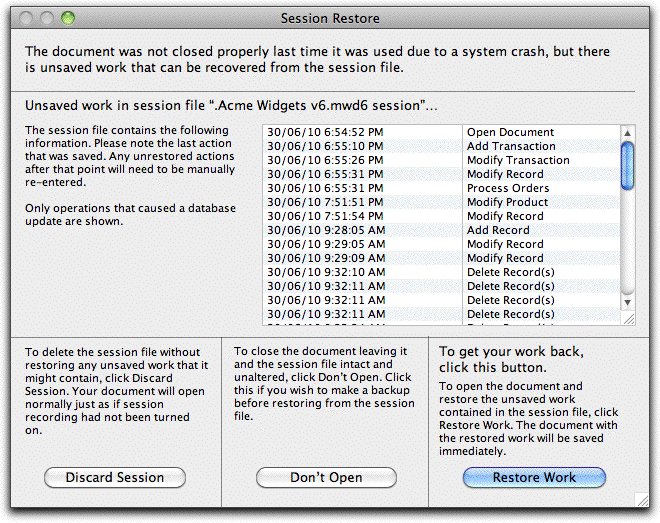
Restore Work: Click this to restore the session information—upon completion of the restore MoneyWorks will save your document.
Don’t Open: Click this if you don’t want to open your document—the session file will remain intact until you next attempt to open your document.
Discard Session: Click this if you want open MoneyWorks discarding the session file. Your document will be opened as it was when last saved.
Warning: Avoid updating MoneyWorks until after you have restored the session file—these are not necessarily compatible across versions.
Multiple Instances: If set, a new instance of MoneyWorks will start when you double-click a MoneyWorks document or open one under the File menu. This was the default behaviour in Windows prior to MoneyWorks 6. If the option is off, the current MoneyWorks file will be closed before the new file is opened.
Note: If you have external scripts running and more than one instance of MoneyWorks running, it is not possible to direct communication from the script to a particular instance.
Confirm before Quitting (windows only) If set you will be asked if you really do want to Quit Moneyworks if you close the frame window.
Show recent documents in Welcome screen If set, a list of recently opened MoneyWorks files and (for Gold and Datacentre) connections to MoneyWorks clients will be displayed in the MoneyWorks Welcome screen.
Used to specify how emails generated by MoneyWorks are to be sent.
Create message in the system mail client: Emails will be created in your desktop mail system, allowing them to be checked and sent. Windows users can select Outlook or any other simple MAPI client. For Mac users, the default email client will be used (Mail or Outlook supported).
Send emails directly via a mail server: SMTP details if you want to bypass your email client and use the built-in SMTP server.
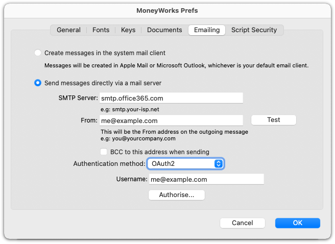
The email address specified here is the default one to use; if the logged in user has an email address specified as part of his or her user privileges settings, that can optionally used instead (however the credentials enetered here would need to be valid for sending from that account). Check with your ISP or IT support team if you are unsure as to your settings.
Normally, SMTP servers require a username and password for authentication. Enter the credentials and then click Test to send a test email to yourself. You can also hold down the Shift key when clicking Test to get a log of the SMTP conversation with the server to help diagnose connection problems.
In MoneyWorks 9.1.9 and later, you can authenticate against Office365 mail using OAuth2. Enter your Microsoft account username and click Authorise… to grant access to MoneyWorks for sending email via your account. Then click Test to send a test email to yourself.
Note: No record is maintained in MoneyWorks of emailed items. Set the BCC option to have a copy of emails sent to the specified From address.
For security reasons, mwScripts do not have access to your complete file system.
If you need your scripts to access other directories, they should be specified here.
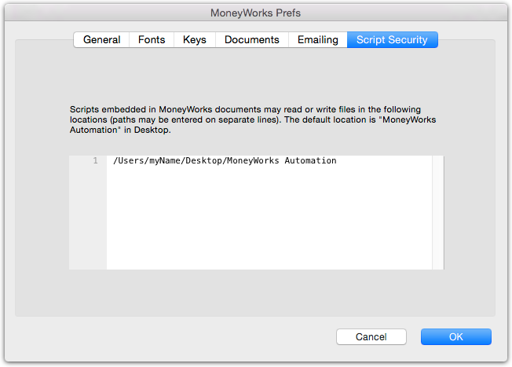